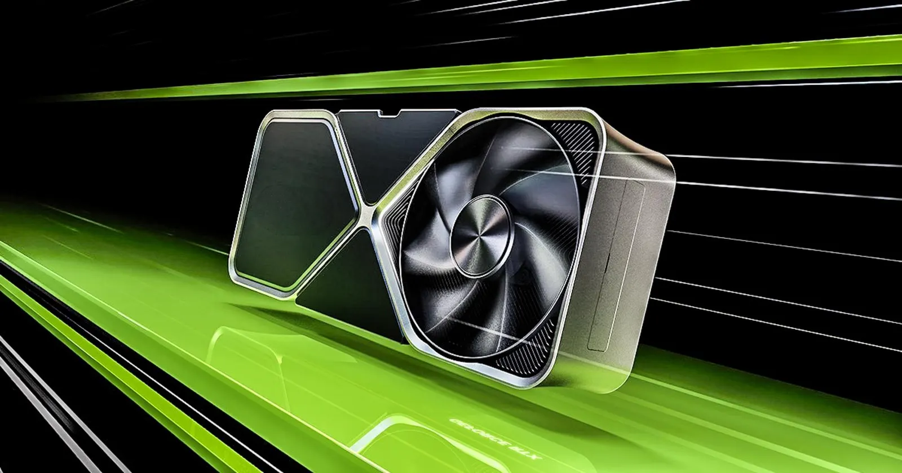

Newer AI focus going to RTX 5000 series
NVIDIA has announced that its upcoming RTX 5000 series graphics cards will place a stronger emphasis on AI capabilities, marking a significant shift in focus for the company's next-generation GPUs. This move is expected to enhance various applications, from gaming to professional workloads, by leveraging advanced AI technologies.
The RTX 5000 series is set to build upon the success of the previous RTX generations, which introduced real-time ray tracing and DLSS (Deep Learning Super Sampling) to the gaming world. With the new AI-centric approach, NVIDIA aims to push the boundaries of what GPUs can achieve, particularly in areas such as machine learning, content creation, and immersive gaming experiences.
One of the key features of the RTX 5000 series will be enhanced AI processing power, allowing for more sophisticated algorithms and models to run directly on the GPU. This is expected to benefit not only gamers but also professionals in fields like 3D rendering, video editing, and scientific simulations, where AI can significantly speed up workflows and improve output quality.

NVIDIA's focus on AI with the RTX 5000 series also aligns with broader industry trends, as AI continues to play an increasingly important role in technology development. By integrating advanced AI capabilities into their GPUs, NVIDIA is positioning itself at the forefront of this evolution, catering to both consumer and enterprise markets.